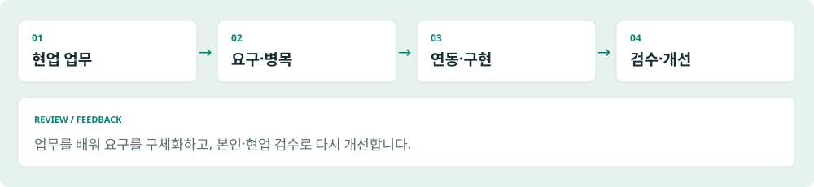

PROFILE
01 / 24모호한 요구를 실제로 쓰이는 시스템으로 만드는 엔지니어
현업의 업무를 직접 배우고 병목을 찾아, 필요한 사람과 기술을 연결해 해결합니다. 에너지 분야의 O&M 모니터링, 실적 처리 자동화, 사업성 사전 검토와 AUDPlatform 기반 영업·수주·주간회의 업무 개발을 맡아 왔습니다.

업무를 배우는 데서 시작합니다
처음부터 완성된 요구사항이 주어지지는 않았습니다. 발전소 운영 담당자의 확인 방식, 사업개발 담당자의 검토 순서, 경영지원의 수익성 분석을 배우며 구현할 범위를 구체화했습니다. 기술 선택의 출발점은 실제 사용자가 해야 하는 일입니다.
연동에서 운영까지 연결합니다
외부 데이터 수집과 정규화, 메일·첨부 처리, 데이터베이스 적재, 업무 화면과 모바일 조회를 연결했습니다. 기능을 만든 뒤에는 본인 검수와 현업 피드백으로 결과를 확인하고 개선했습니다.
지원하는 역할
AX에서는 반복 업무를 줄이고 사람의 검토를 남기는 판단을, FDE에서는 불명확한 요구와 기존 시스템 제약을 실제 구현으로 연결하는 역량을 보여드립니다. AX·FDE는 지원 방향이며 현재 공식 직함을 뜻하지 않습니다.
이 포트폴리오의 읽는 법
대표 사례는 O&M 관제, 실적 자동화, 주소 기반 예비 사업성 검토입니다. 도식과 예시 화면은 합성 자료로 새로 구성했습니다. 운영 상태는 사용자 설명, 구현 범위는 확인된 소스·문서에 근거하며 독립적인 운영 재측정과 구분합니다.